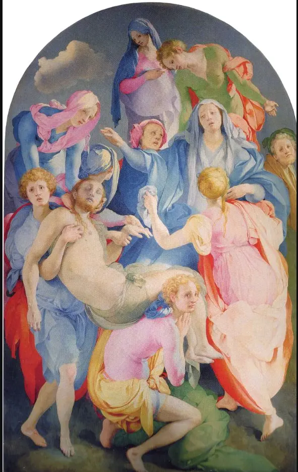
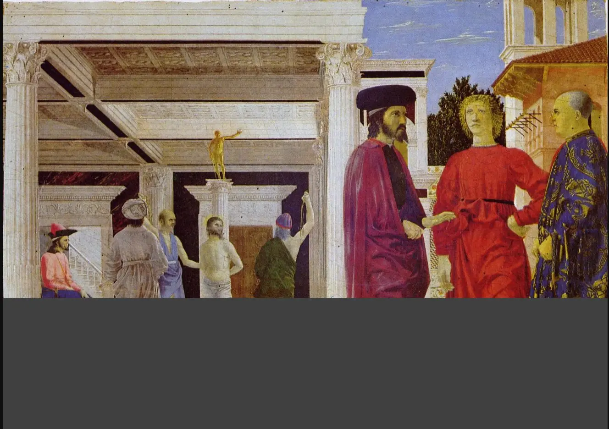
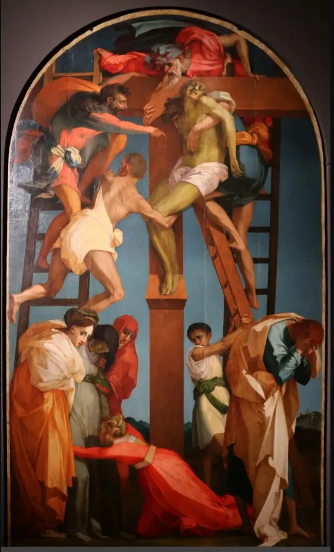
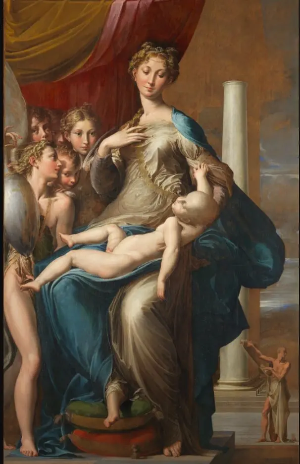
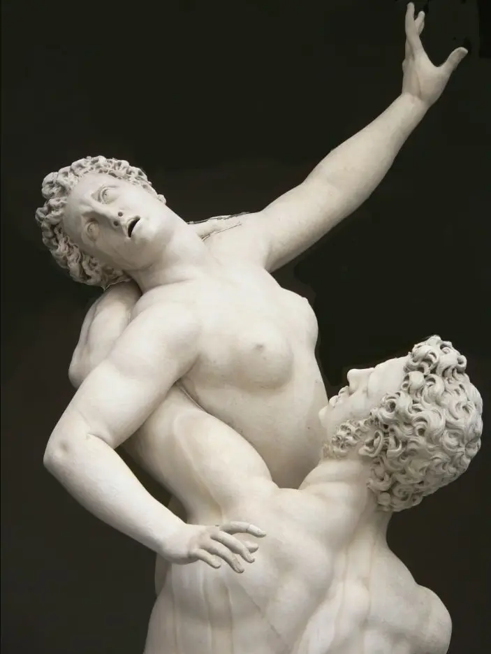
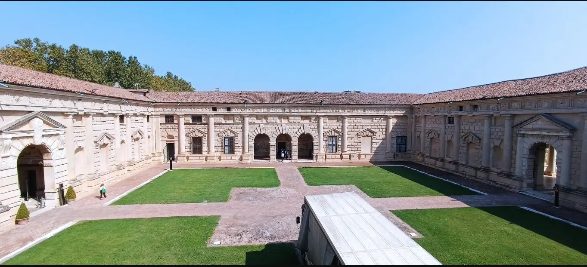
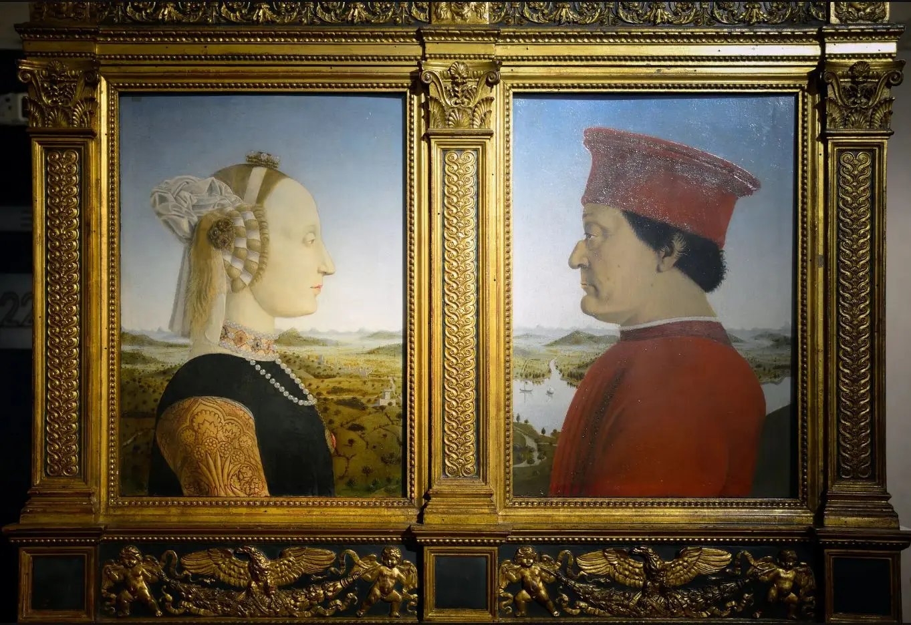
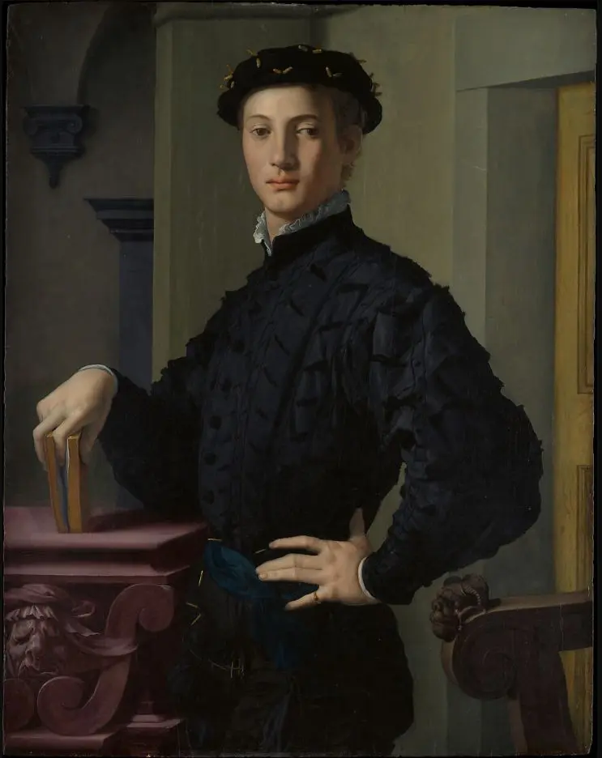
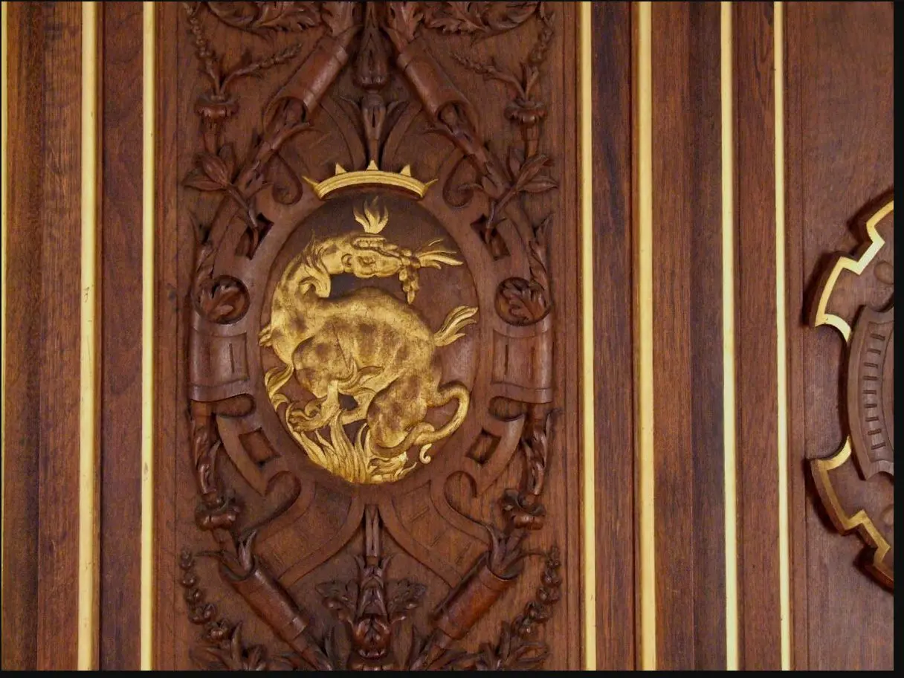

Le linee convergono e rendono confrontabili le distanze.

09 · Manierismo — prima di sapere
Perché rompere un equilibrio che si è appena imparato a costruire?
Non cercare ancora il titolo. Cerca un appoggio, una profondità, una luce, un punto in cui l’occhio possa fermarsi.
- Dove si trova il peso dei corpi?
- I piedi poggiano davvero?
- Esiste un centro stabile?
- Da dove proviene la luce?
- Perché il colore non sembra naturale?
02
Il mondo precedente: la conquista dell’equilibrio
Dal modulo 08
La regola non viene dimenticata.
Diventa visibile come regola.
Prospettiva, proporzione, centralità e spazio coerente avevano assegnato all’osservatore un posto. Gli artisti del Cinquecento conoscono quel sistema; proprio per questo possono torcerlo senza perderne il controllo.

Il corpo è relazione leggibile fra parti.
La composizione promette un ordine riconoscibile.
Un punto di vista organizza ciò che appare.
Corpi e architetture sembrano appartenere allo stesso ambiente.
Il visibile appare costruibile, anche se non neutrale.
Il Manierismo nasce dentro una competenza piena, non fuori di essa.
03
Quando il centro storico si moltiplica
Eventi, reti, scelte
La crisi non dipinge.
Rende disponibili nuove forme.
Le guerre d’Italia, il Sacco di Roma, le corti, la Riforma e la mobilità degli artisti non producono automaticamente corpi allungati. Modificano pubblici, occasioni, paure, ambizioni e percorsi professionali.
Società → Corte e committenza → Artista → Forma → Spettatore
Seleziona un nodo: la forma nasce da una rete, non da un interruttore storico.
04
Che cosa significa “maniera”?
Una parola, tre problemi
“Manierismo” non è il nome che gli artisti davano a un movimento compatto.
Nel Cinquecento maniera può indicare il modo di fare, lo stile personale, la grazia appresa, la padronanza tecnica. Vasari elogia la maniera moderna; la categoria “Manierismo” viene costruita e trasformata dagli storici molto più tardi.
Attenzione alla scorciatoia.
Raggruppare Pontormo, Rosso, Parmigianino, Bronzino, Giulio Romano e Giambologna aiuta a confrontare alcuni problemi; non significa che lavorino allo stesso modo o formino una scuola uniforme.
05
Uno spazio senza riposo
Esperimento · Trova un centro che non c’è
L’instabilità non è casuale.
È costruita.
Attiva una lettura alla volta. Il centro geometrico esiste, ma non coincide con un unico centro narrativo o emotivo; direzioni, appoggi e sguardi spostano continuamente l’attenzione.
Equivalente testuale: nessuna sovrapposizione è attiva.

06
Il corpo supera la propria misura
Esperimento · Allunga la misura
Un corpo deformato non è necessariamente un corpo sbagliato.
La proporzione naturalistica è una scelta possibile; allungamento, torsione e figura serpentinata producono grazia, virtuosismo, instabilità e molteplici punti di vista.
Figura proporzionata, frontale, con peso distribuito.


07
Il colore smette di obbedire alla natura
Esperimento · Sposta il colore
La luce può diventare mentale e artificiale.
Il laboratorio non ricolora un’opera: usa una scena astratta dichiaratamente didattica. Cambia tavolozza e osserva come il colore unisce, separa, allontana o tende le forme.
Simulazione cromatica
Tavolozza naturalistica: terre, incarnati e azzurro moderato formano una luce plausibile.
Simulazione didattica, non alterazione digitale di un’opera.
rosa polverosoazzurro freddoverde chiaroavoriovermiglione
08
L’architettura disobbedisce all’ordine
Giulio Romano · Palazzo Te
Per violare una regola in modo significativo bisogna conoscerla.
La corte di Federico II Gonzaga non chiede un manuale neutro dell’antico, ma una villa capace di sorprendere un pubblico competente. Bugnato, architravi, triglifi, ritmo e simmetria diventano materia di gioco controllato.

Facciata ordinata: cinque campate, ritmo regolare, triglifi allineati e chiavi contenute.
09
La corte e la maschera
Esperimento · Costruisci la distanza
Il volto pubblico non è una diagnosi psicologica.
È una relazione politica.
Abito, postura, tessuto, oggetti, spazio e sguardo costruiscono rango e accessibilità. L’assenza di sorriso non prova “freddezza”: può dichiarare controllo, cultura e distanza sociale.


10
Il sacro sotto pressione
Riforma, dibattito, immagini
Non esiste un interruttore chiamato Concilio di Trento.
Il Giudizio universale di Michelangelo fu dipinto fra 1536 e 1541; le coperture di Daniele da Volterra iniziarono nel 1565. Pontormo e Rosso precedono il decreto tridentino sulle immagini del 1563. Date, commissioni, polemiche e interventi non vanno compressi in una causa unica.
Distinzione necessaria. Chiarezza narrativa, complessità formale, partecipazione emotiva e controllo istituzionale sono dimensioni diverse. Possono incontrarsi, ma non coincidono automaticamente.
11
Una forma che viaggia
Artisti, fogli, stampe, corti
Il Manierismo diventa una rete internazionale.
Il Sacco di Roma accelera spostamenti già in corso; disegni e incisioni moltiplicano i modelli. A Fontainebleau gli artisti italiani lavorano con artigiani francesi in un programma di corte che integra pittura, stucco, legno e architettura.

12
Laboratorio conclusivo: dalla misura all’instabilità
Quattro opere · una categoria per volta
L’ordine non scompare.
Cambia il rapporto con chi guarda.
Seleziona una categoria: le quattro opere restano affiancate. Non leggere una successione di “miglioramenti”; osserva trasformazioni di funzione, forma e presenza.
Società→Arte→Nuova immagine del mondo→Futuro
13
Ritorno all’immagine iniziale
La stessa opera · un altro sguardo
Ora puoi dare un nome alla tensione.
L’opera viene spesso chiamata Deposizione, Trasporto di Cristo o Compianto: perfino il momento narrativo non è del tutto pacificato. Pontormo la realizzò per la cappella Capponi in Santa Felicita, Firenze, fra 1525 e 1528 circa.
Il tuo primo sguardo
Non hai ancora scritto un’annotazione.
La tua sintesi
Completa almeno un laboratorio e il secondo taccuino per costruire una sintesi del percorso.
Verifica · dodici nuclei, dodici recuperi
La regola è diventata problema?
Un errore apre una microlezione specifica e blocca il passaggio. Il recupero resta attivo anche se ricarichi la pagina.
Domanda 1 di 12
Soglia · verso il modulo 10
Il Manierismo non dimentica l’ordine rinascimentale: lo conosce troppo bene per considerarlo ancora naturale.
Il corpo si allunga, lo spazio perde il centro, il colore si emancipa e la regola diventa artificio. La tensione non scomparirà: con il Barocco entrerà nello spazio dello spettatore e diventerà luce, azione, corpo e persuasione.
Modulo successivo10 — Quando il sacro entra nella stradaCaravaggio · Barocco — Corpi reali, luce, persuasioneRicerca e trasparenza
Fonti, opere, licenze.
Le schede storico-artistiche si fondano su musei, istituzioni e risorse accademiche. Wikimedia Commons è usata come deposito delle riproduzioni e delle licenze, non come unica autorità interpretativa.
Fonti storico-artistiche
Metropolitan Museum · Mannerism, Bronzino and his contemporaries
Metropolitan Museum · Bronzino, Portrait of a Young Man
Gallerie degli Uffizi · Madonna dal collo lungo
Friends of Florence · Pontormo, cappella Capponi
Fondazione Palazzo Te · storia e ambienti
Galleria dell’Accademia di Firenze · Giambologna
Metropolitan Museum · Fontainebleau
Smarthistory · Concilio di Trento e riforma delle immagini
Registro delle immagini locali
| File | Opera, data, collocazione | Provenienza e licenza |
|---|---|---|
| pontormo-deposizione.webp | Pontormo, Deposizione / Trasporto, 1525–1528, Santa Felicita | Commons · pubblico dominio |
| piero-flagellazione.webp | Piero della Francesca, Flagellazione, 1455–1460 ca., Urbino | Commons · pubblico dominio |
| rosso-deposizione.webp | Rosso Fiorentino, Deposizione, 1521, Volterra | Commons · CC BY-SA 4.0, foto Sailko |
| parmigianino-madonna.webp | Parmigianino, Madonna dal collo lungo, 1534–1540, Uffizi | Commons · pubblico dominio |
| giambologna-sabina.webp | Giambologna, Ratto della Sabina, 1579–1583, Firenze | Commons · CC BY-SA 4.0, foto Mary Harrsch |
| palazzo-te-cortile.webp | Giulio Romano, Palazzo Te, 1525–1535 ca., Mantova | Commons · CC BY-SA 4.0, foto Zovskj |
| piero-urbino.webp | Piero della Francesca, Dittico di Urbino, 1465–1472 ca., Uffizi | Commons · CC BY-SA 4.0 |
| bronzino-ritratto.webp | Bronzino, Ritratto di giovane, anni 1530, New York | Met Open Access · CC0 / pubblico dominio |
| fontainebleau-galleria.webp | Galleria di Francesco I, decorazione anni 1530, Fontainebleau | Commons · CC BY-SA 3.0, foto Mattis |
| caravaggio-vocazione.webp | Caravaggio, Vocazione di san Matteo, 1599–1600, Roma | Commons · pubblico dominio |
{kind=link}
{kind=link}
_01.jpg){kind=link}
{kind=link}
{kind=link}
{kind=link}
{kind=link}
{kind=link}
.jpg){kind=link}